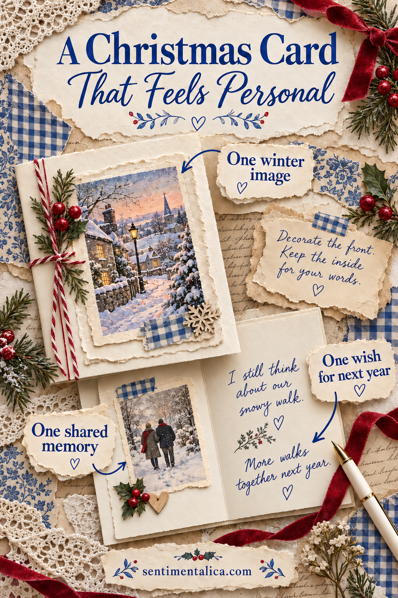

A Christmas card becomes personal when the person opening it can recognise your relationship inside. You do not need a complicated fold or a page of perfect handwriting. One image, one shared memory, and one specific wish give a simple card a reason to be kept. Start with the person before you reach for the paper.
Find the small moment only you would mention
Write the recipient’s name on scrap paper. Underneath, finish this sentence: “When I think of us this year, I remember…” Choose something ordinary enough to be true: a late train conversation, soup brought to your door, a kitchen singalong, or the way they always save you the corner seat. A modest detail carries more feeling than a grand summary of the year.
You are looking for a memory that will feel pleasant to receive. If you are unsure whether a private story belongs in a card that might stand on a mantel, keep the reference gentle. “I still smile about our rainy afternoon in October” can hold the whole memory without explaining it to everyone in the room.
Choose an image that gives the memory a setting
Take a blank folded card that fits an envelope you already own. Lay one decorative image on the front, leaving a broad plain border. A small house might suggest a welcome; candlelight might recall an evening together. The connection does not need to be literal. A colour they love can do the same work.

Test the arrangement before sticking anything down. Place a short paper label beside the image and write the greeting in pencil. If the picture competes with the words, make it smaller or use only a strip along one edge. The front should give the reader somewhere clear to look.
Write a memory, then a wish that belongs to them
Inside, begin with the detail you found earlier. “I keep remembering the afternoon you taught me your soup recipe, especially how we forgot the bread.” Follow it with what that moment meant: “You made a difficult week feel ordinary again.” Then offer a wish suited to the person: “I hope Christmas brings you a slow morning and a kitchen full of people who help with the washing up.”
Someone who has had a tiring year might appreciate rest. A friend starting something new may welcome encouragement. A neighbour could simply enjoy knowing that their kindness was noticed. You can keep all of this to three sentences. Read it aloud once and replace any phrase you would never say in conversation.
Put the card together with room to breathe
Use a thin, even layer of adhesive on the back of the decorative paper, especially near its corners. Protect the writing area with a clean scrap while you work. Let the front dry fully before adding the message inside, so you are writing on a firm surface rather than shifting layers.
If handwriting across a whole blank panel feels daunting, pencil a faint baseline or write the message first on a separate plain insert. Keep the insert loose until you are happy with the wording. Add the date somewhere small; years later, that tiny practical detail will make the memory easier to place.
Finish for the person who will open it
Check that the card slides comfortably into its envelope and that every glued edge has settled. Write the address on a clear, undecorated area. Before posting, check the finished size and thickness against your local postal service’s rules. If you are handing it over, write the person’s name on the envelope as carefully as you wrote the message.
Stop when the card says what you meant. An extra bow or another layer cannot make the memory more yours. Your specific sentence has already done that work.